Lectures · Bài giảng › L10b
Sequences: limits and subsequencesDãy số: giới hạn và dãy con
Chapter 6 moves from continuous quantities to discrete infinite lists. A sequence is a function of $n=1,2,3,\dots$ and the only question is what happens as $n\to\infty$. Everything is parallel to limits of functions at infinity (Lecture 2): same laws, same $\varepsilon$–type definition, the new idea is the subsequence, our tool for proving divergence.
Teach the $\varepsilon$–$N$ definition slowly and with the four-step recipe of slide 11; it is the first fully rigorous proof of the course and the model for every later one. In the exercises let the student find $N$ for a given $\varepsilon$ before proving the general statement.
Chương 6 chuyển từ các đại lượng liên tục sang danh sách vô hạn rời rạc. Một dãy số là hàm của $n=1,2,3,\dots$ và câu hỏi duy nhất là điều gì xảy ra khi $n\to\infty$. Mọi thứ song song với giới hạn của hàm tại vô cực (Bài 2): cùng các quy tắc, cùng định nghĩa kiểu $\varepsilon$; ý mới là dãy con, công cụ để chứng minh phân kỳ.
Dạy định nghĩa $\varepsilon$–$N$ thật chậm với công thức bốn bước ở slide 11; đây là chứng minh chặt chẽ đầy đủ đầu tiên của khóa học và là mẫu cho mọi chứng minh sau. Trong bài tập hãy để bạn tìm $N$ cho một $\varepsilon$ cụ thể trước khi chứng minh tổng quát.
Textbook · Giáo trình: Thomas ch. 10 (10.1 sequences) · Stewart ch. 11 (11.1 sequences)
Slide list · Danh sách slide (17)
Chapter 6: Sequences and Series · Chương 6: Dãy số và chuỗi số
★ Context · Bổ trợ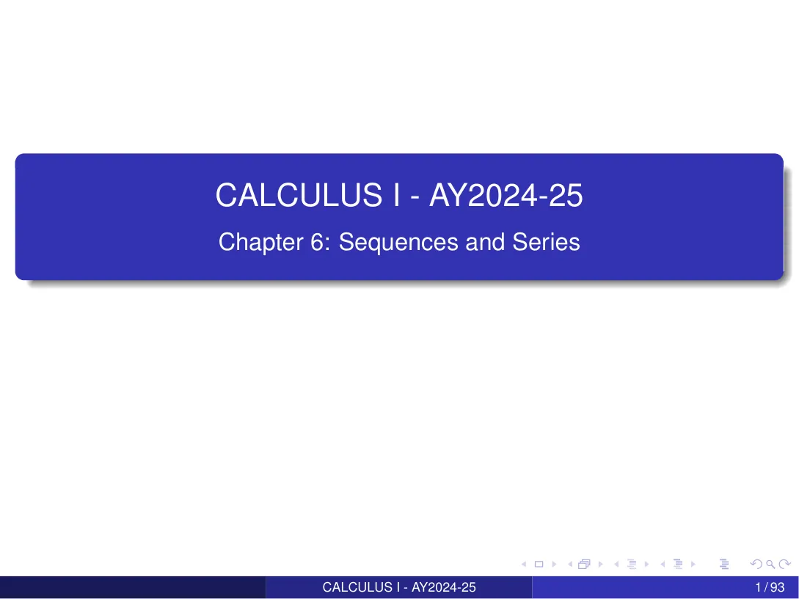
Title slide of Chapter 6. This chapter runs through four topics: sequences, infinite series, convergence tests and power series (Taylor and Maclaurin series).
Slide tiêu đề của Chương 6. Chương này đi qua bốn chủ đề: dãy số, chuỗi vô hạn, các tiêu chuẩn hội tụ và chuỗi lũy thừa (chuỗi Taylor và Maclaurin).
Outline of the chapter · Dàn bài của chương
★ Context · Bổ trợ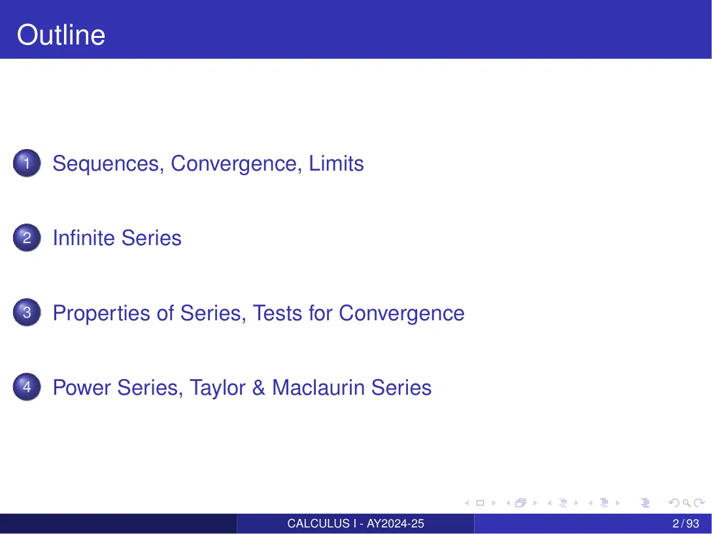
Four parts: (1) sequences, convergence, limits; (2) infinite series; (3) properties of series and tests for convergence; (4) power series, Taylor and Maclaurin series. The series of part 2 are built from sequences (their partial sums), so part 1 is the foundation of the whole chapter.
Bốn phần: (1) dãy số, hội tụ, giới hạn; (2) chuỗi vô hạn; (3) tính chất của chuỗi và các tiêu chuẩn hội tụ; (4) chuỗi lũy thừa, chuỗi Taylor và Maclaurin. Chuỗi ở phần 2 được xây từ dãy số (các tổng riêng), nên phần 1 là nền tảng của cả chương.
Outline: part 1, sequences · Dàn bài: phần 1, dãy số
★ Context · Bổ trợ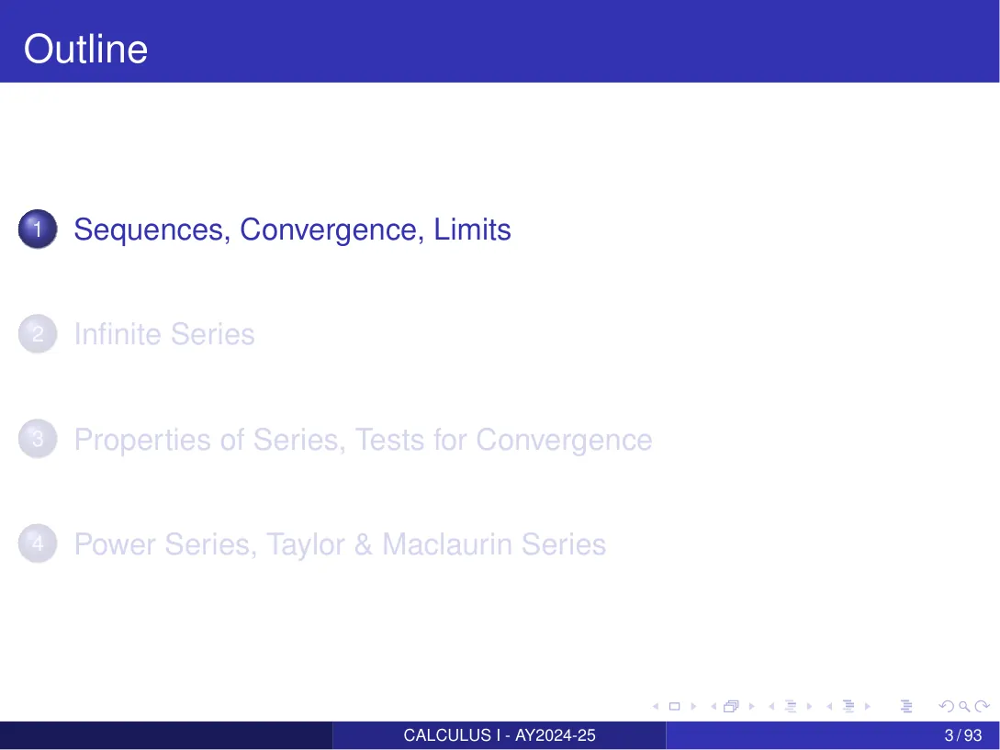
The same outline, now at part 1: sequences, convergence, limits.
Cùng dàn bài, bây giờ ở phần 1: dãy số, hội tụ, giới hạn.
Notation for number sets · Ký hiệu các tập số
★ Context · Bổ trợ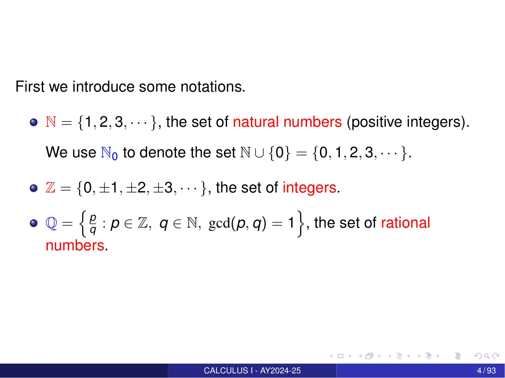
$\mathbb N=\{1,2,3,\dots\}$ (natural numbers, positive integers); $\mathbb N_0=\mathbb N\cup\{0\}$; $\mathbb Z=\{0,\pm1,\pm2,\dots\}$ (integers); $\mathbb Q=\{\frac pq:p\in\mathbb Z,q\in\mathbb N,\gcd(p,q)=1\}$ (rational numbers). Note that in this course $\mathbb N$ starts at $1$.
$\mathbb N=\{1,2,3,\dots\}$ (số tự nhiên, số nguyên dương); $\mathbb N_0=\mathbb N\cup\{0\}$; $\mathbb Z=\{0,\pm1,\pm2,\dots\}$ (số nguyên); $\mathbb Q=\{\frac pq:p\in\mathbb Z,q\in\mathbb N,\gcd(p,q)=1\}$ (số hữu tỉ). Lưu ý trong khóa này $\mathbb N$ bắt đầu từ $1$.
Definition of a sequence · Định nghĩa dãy số
★★★ Core · Cốt lõi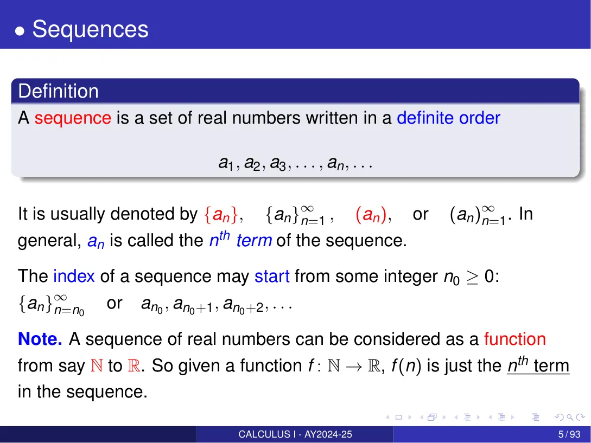
A sequence is a list of real numbers in a definite order $a_1,a_2,a_3,\dots,a_n,\dots$, written $\{a_n\}$, $\{a_n\}_{n=1}^\infty$ or $(a_n)$; $a_n$ is the $n$-th term. The index may start elsewhere, $\{a_n\}_{n=n_0}^\infty$ with $n_0\ge0$. A sequence is a function $f:\mathbb N\to\mathbb R$, with $f(n)=a_n$: all the language of functions (increasing, bounded, limit at infinity) carries over.
Dãy số là một danh sách các số thực theo thứ tự xác định $a_1,a_2,a_3,\dots,a_n,\dots$, viết $\{a_n\}$, $\{a_n\}_{n=1}^\infty$ hoặc $(a_n)$; $a_n$ là số hạng thứ $n$. Chỉ số có thể bắt đầu ở chỗ khác, $\{a_n\}_{n=n_0}^\infty$ với $n_0\ge0$. Dãy số là một hàm $f:\mathbb N\to\mathbb R$, với $f(n)=a_n$: mọi ngôn ngữ của hàm số (tăng, bị chặn, giới hạn tại vô cực) đều dùng được.
Different ways to define a sequence · Các cách xác định một dãy số
★★★ Core · Cốt lõi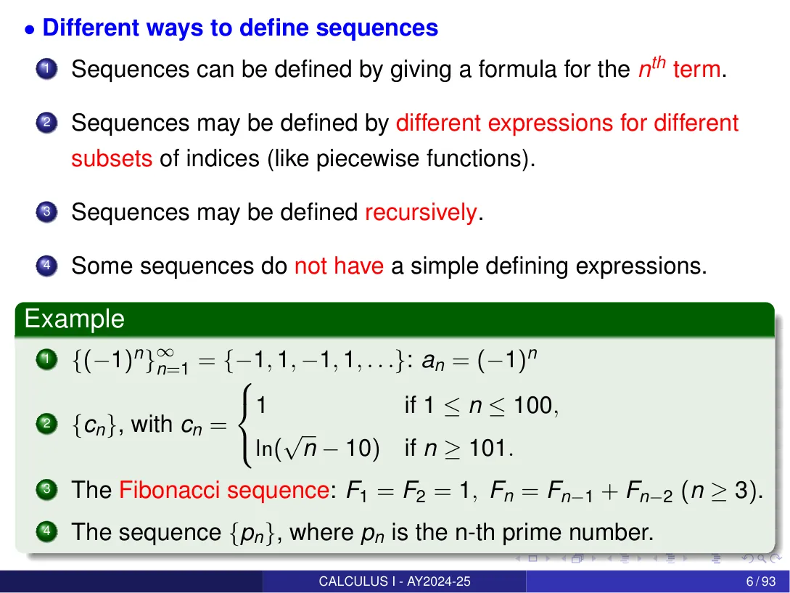
Four ways: (1) a formula for the $n$-th term; (2) different expressions on different index ranges (like a piecewise function); (3) recursively, each term from earlier ones; (4) no simple expression at all. Slide examples: $a_n=(-1)^n$ gives $-1,1,-1,1,\dots$; $c_n=1$ for $1\le n\le100$ and $c_n=\ln(\sqrt n-10)$ for $n\ge101$ (note $\sqrt{101}>10$, so the logarithm is defined); the Fibonacci sequence $F_1=F_2=1$, $F_n=F_{n-1}+F_{n-2}$; the sequence of primes $p_n$.
Bốn cách: (1) công thức cho số hạng thứ $n$; (2) các biểu thức khác nhau trên các khoảng chỉ số khác nhau (như hàm từng khúc); (3) đệ quy, mỗi số hạng tính từ các số hạng trước; (4) không có biểu thức đơn giản. Ví dụ trên slide: $a_n=(-1)^n$ cho $-1,1,-1,1,\dots$; $c_n=1$ với $1\le n\le100$ và $c_n=\ln(\sqrt n-10)$ với $n\ge101$ (chú ý $\sqrt{101}>10$ nên logarit xác định); dãy Fibonacci $F_1=F_2=1$, $F_n=F_{n-1}+F_{n-2}$; dãy các số nguyên tố $p_n$.
For the slide's sequence $c_n$ find $c_{100}$, $c_{101}$, $c_{102}$ (decimals), and find $F_{10}$.
Với dãy $c_n$ của slide, tìm $c_{100}$, $c_{101}$, $c_{102}$ (số thập phân), và tìm $F_{10}$.
Answer and solution · Đáp án và lời giải
Answer · Đáp án: $c_{100}=1$, $c_{101}\approx-3.00$, $c_{102}\approx-2.31$, $F_{10}=55$
$c_{100}=1$ (first rule). $c_{101}=\ln(\sqrt{101}-10)=\ln(0.0499)\approx-3.00$ and $c_{102}=\ln(\sqrt{102}-10)\approx\ln0.0995\approx-2.31$. Fibonacci: $1,1,2,3,5,8,13,21,34,55$.
$c_{100}=1$ (quy tắc đầu). $c_{101}=\ln(\sqrt{101}-10)=\ln(0.0499)\approx-3.00$ và $c_{102}=\ln(\sqrt{102}-10)\approx\ln0.0995\approx-2.31$. Fibonacci: $1,1,2,3,5,8,13,21,34,55$.
Web search: where the Fibonacci sequence comes from · Tìm hiểu: dãy Fibonacci xuất phát từ đâu
★ Context · Bổ trợ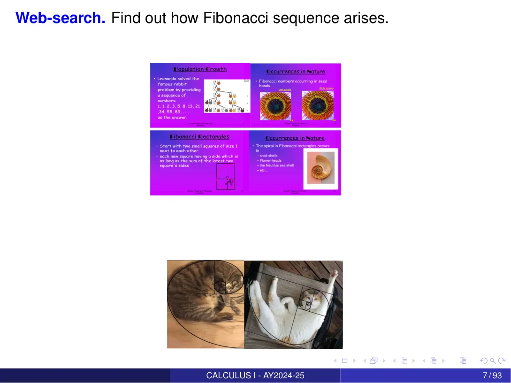
The slide asks you to find out how the Fibonacci sequence arises. It comes from Fibonacci's rabbit problem (Liber Abaci, 1202): each pair of rabbits produces a new pair every month starting at age two months, so the number of pairs follows $F_n=F_{n-1}+F_{n-2}$. It appears again in spirals of leaves and flowers, and the ratio $\frac{F_{n+1}}{F_n}$ tends to the golden ratio $\varphi=\frac{1+\sqrt5}2$.
Slide yêu cầu tìm hiểu dãy Fibonacci xuất hiện thế nào. Nó đến từ bài toán thỏ của Fibonacci (Liber Abaci, 1202): mỗi cặp thỏ sinh một cặp mới mỗi tháng kể từ tháng tuổi thứ hai, nên số cặp thỏ theo $F_n=F_{n-1}+F_{n-2}$. Nó xuất hiện lại trong xoắn ốc của lá và hoa, và tỉ số $\frac{F_{n+1}}{F_n}$ tiến đến tỉ lệ vàng $\varphi=\frac{1+\sqrt5}2$.
Assuming $\frac{F_{n+1}}{F_n}\to L$ exists, find $L$ from the recursion, and check with $\frac{F_{30}}{F_{29}}$.
Giả sử $\frac{F_{n+1}}{F_n}\to L$ tồn tại, tìm $L$ từ công thức đệ quy, và kiểm tra bằng $\frac{F_{30}}{F_{29}}$.
Answer and solution · Đáp án và lời giải
Answer · Đáp án: $L=\dfrac{1+\sqrt5}2\approx1.618$
Dividing $F_{n+1}=F_n+F_{n-1}$ by $F_n$ gives $\frac{F_{n+1}}{F_n}=1+\frac{F_{n-1}}{F_n}$, so in the limit $L=1+\frac1L$, i.e. $L^2-L-1=0$ and the positive root is $L=\frac{1+\sqrt5}2$. Numerically $\frac{F_{30}}{F_{29}}=\frac{832040}{514229}\approx1.618034$.
Chia $F_{n+1}=F_n+F_{n-1}$ cho $F_n$ được $\frac{F_{n+1}}{F_n}=1+\frac{F_{n-1}}{F_n}$, nên ở giới hạn $L=1+\frac1L$, tức $L^2-L-1=0$ và nghiệm dương là $L=\frac{1+\sqrt5}2$. Bằng số $\frac{F_{30}}{F_{29}}=\frac{832040}{514229}\approx1.618034$.
Convergent and divergent sequences: examples · Dãy hội tụ và phân kỳ: ví dụ
★★★ Core · Cốt lõi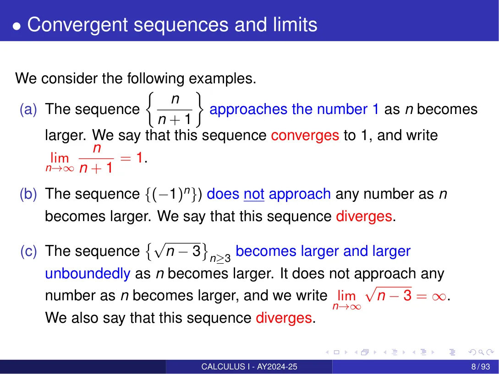
(a) $\left\{\frac n{n+1}\right\}$ approaches $1$ as $n$ grows: it converges to $1$, $\lim_{n\to\infty}\frac n{n+1}=1$. (b) $\{(-1)^n\}$ does not approach any number: it diverges. (c) $\{\sqrt{n-3}\}_{n\ge3}$ grows without bound; we write $\lim\sqrt{n-3}=\infty$, and say it also diverges. Convergence means a finite limit.
(a) $\left\{\frac n{n+1}\right\}$ tiến đến $1$ khi $n$ tăng: nó hội tụ về $1$, $\lim_{n\to\infty}\frac n{n+1}=1$. (b) $\{(-1)^n\}$ không tiến đến số nào: nó phân kỳ. (c) $\{\sqrt{n-3}\}_{n\ge3}$ tăng không giới hạn; ta viết $\lim\sqrt{n-3}=\infty$, và nói nó cũng phân kỳ. Hội tụ nghĩa là có giới hạn hữu hạn.
Decide whether each converges, and give the limit if so: $a_n=\frac{2n+1}{3n-2}$, $b_n=\cos(n\pi)$, $c_n=\frac{n^2}{n+1}$.
Xác định mỗi dãy có hội tụ không, và cho giới hạn nếu có: $a_n=\frac{2n+1}{3n-2}$, $b_n=\cos(n\pi)$, $c_n=\frac{n^2}{n+1}$.
Answer and solution · Đáp án và lời giải
Answer · Đáp án: $a_n\to\frac23$; $b_n$ diverges; $c_n\to\infty$ (diverges)
Divide numerator and denominator of $a_n$ by $n$: $\frac{2+1/n}{3-2/n}\to\frac23$. $b_n=(-1)^n$ alternates between $-1$ and $1$. $c_n=\frac{n^2}{n+1}\ge\frac n2$ grows without bound.
Chia tử và mẫu của $a_n$ cho $n$: $\frac{2+1/n}{3-2/n}\to\frac23$. $b_n=(-1)^n$ luân phiên giữa $-1$ và $1$. $c_n=\frac{n^2}{n+1}\ge\frac n2$ tăng không giới hạn.
Formal definition of the limit of a sequence · Định nghĩa chính xác giới hạn của dãy số
★★★ Core · Cốt lõi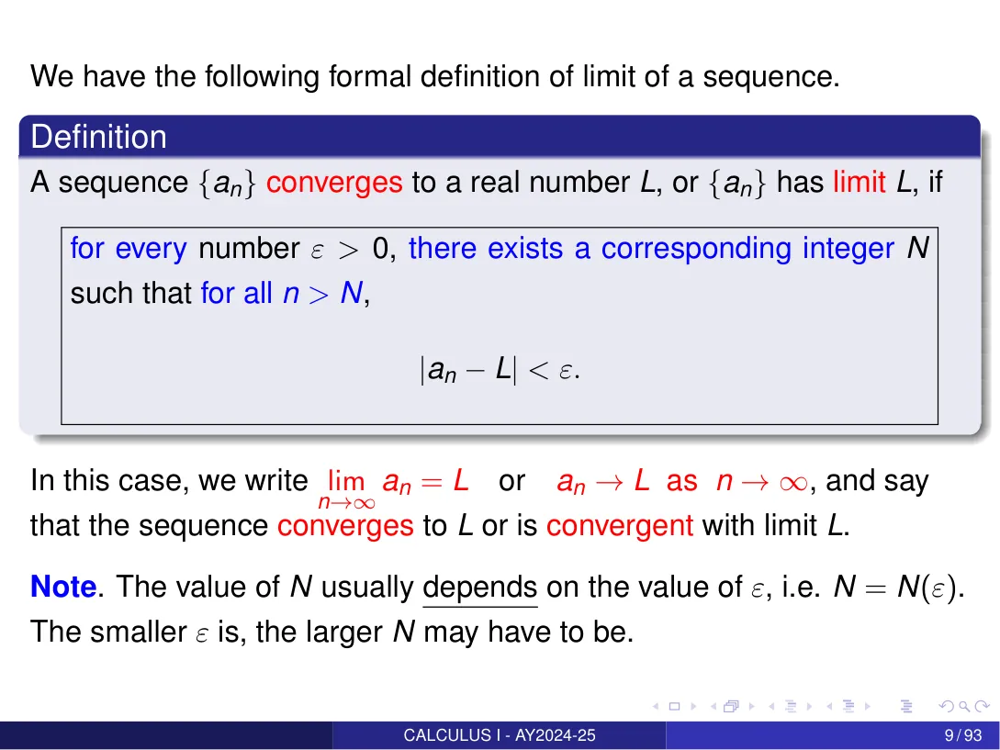
$\{a_n\}$ converges to $L$ if for every $\varepsilon>0$ there is an integer $N$ such that $|a_n-L|<\varepsilon$ for all $n>N$. Then $\lim a_n=L$ or $a_n\to L$. Note that $N$ usually depends on $\varepsilon$, $N=N(\varepsilon)$: the smaller $\varepsilon$ is, the larger $N$ may have to be. Read it as a game: an opponent picks the tolerance $\varepsilon$, you must answer with an $N$ beyond which every term is within $\varepsilon$ of $L$.
$\{a_n\}$ hội tụ về $L$ nếu với mọi $\varepsilon>0$ tồn tại số nguyên $N$ sao cho $|a_n-L|<\varepsilon$ với mọi $n>N$. Khi đó $\lim a_n=L$ hoặc $a_n\to L$. Lưu ý $N$ thường phụ thuộc $\varepsilon$, $N=N(\varepsilon)$: $\varepsilon$ càng nhỏ thì $N$ có thể phải càng lớn. Hãy đọc nó như một trò chơi: đối thủ chọn sai số $\varepsilon$, bạn phải đáp lại bằng một $N$ mà sau đó mọi số hạng đều cách $L$ không quá $\varepsilon$.
Every limit law and theorem of the chapter is proved from this definition; the same pattern returns for limits of functions.
Mọi quy tắc và định lý giới hạn của chương đều được chứng minh từ định nghĩa này; mẫu này sẽ quay lại với giới hạn của hàm số.
For $a_n=\frac n{n+1}\to1$ find the smallest $N$ that works for $\varepsilon=0.01$.
Với $a_n=\frac n{n+1}\to1$ tìm $N$ nhỏ nhất dùng được cho $\varepsilon=0.01$.
Answer and solution · Đáp án và lời giải
Answer · Đáp án: $N=99$
$\left|\frac n{n+1}-1\right|=\frac1{n+1}<0.01\iff n+1>100\iff n>99$. So $N=99$ works (every $n>99$ is $\ge100$, giving $\frac1{n+1}\le\frac1{101}<0.01$), while $N=98$ fails at $n=99$, where $\frac1{100}=0.01$ is not $<0.01$.
$\left|\frac n{n+1}-1\right|=\frac1{n+1}<0.01\iff n+1>100\iff n>99$. Vậy $N=99$ dùng được (mọi $n>99$ đều $\ge100$, cho $\frac1{n+1}\le\frac1{101}<0.01$), còn $N=98$ sai tại $n=99$, vì $\frac1{100}=0.01$ không $<0.01$.
Divergence, and the example $r^n\to0$ · Phân kỳ, và ví dụ $r^n\to0$
★★★ Core · Cốt lõi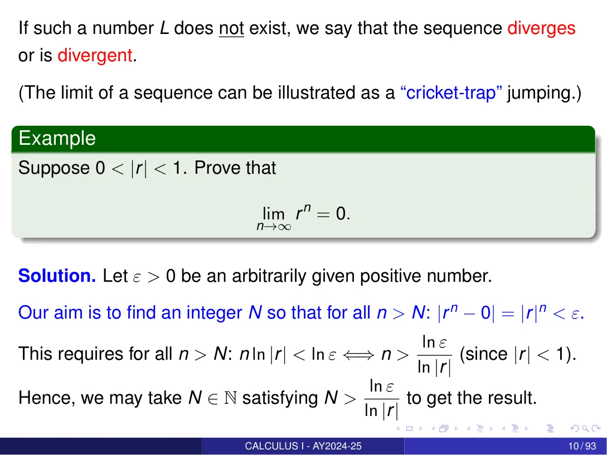
If no such $L$ exists, the sequence diverges. Example: if $0<|r|<1$ then $\lim r^n=0$. Given $\varepsilon>0$ we need $|r^n-0|=|r|^n<\varepsilon$, i.e. $n\ln|r|<\ln\varepsilon$, i.e. $n>\frac{\ln\varepsilon}{\ln|r|}$ (the inequality flips because $\ln|r|<0$). So any integer $N>\frac{\ln\varepsilon}{\ln|r|}$ works. (The slide pictures the limit as a "cricket trap": after step $N$ all terms stay inside the band.)
Nếu không tồn tại $L$ như vậy thì dãy phân kỳ. Ví dụ: nếu $0<|r|<1$ thì $\lim r^n=0$. Với $\varepsilon>0$ cho trước ta cần $|r^n-0|=|r|^n<\varepsilon$, tức $n\ln|r|<\ln\varepsilon$, tức $n>\frac{\ln\varepsilon}{\ln|r|}$ (bất đẳng thức đổi chiều vì $\ln|r|<0$). Vậy mọi số nguyên $N>\frac{\ln\varepsilon}{\ln|r|}$ đều dùng được. (Slide hình dung giới hạn như một "cái bẫy dế": sau bước $N$ mọi số hạng nằm trong dải.)
For $r=\frac12$ and $\varepsilon=10^{-3}$ compute $\frac{\ln\varepsilon}{\ln r}$ and find the first index $n$ with $|r|^n<\varepsilon$.
Với $r=\frac12$ và $\varepsilon=10^{-3}$ tính $\frac{\ln\varepsilon}{\ln r}$ và tìm chỉ số $n$ đầu tiên có $|r|^n<\varepsilon$.
Answer and solution · Đáp án và lời giải
Answer · Đáp án: $9.97$; first index $n=10$
$\frac{\ln10^{-3}}{\ln\frac12}=\frac{3\ln10}{\ln2}\approx9.966$. So $n>9.966$ means $n\ge10$: $\left(\frac12\right)^{10}=\frac1{1024}<10^{-3}$ while $\left(\frac12\right)^9=\frac1{512}>10^{-3}$.
$\frac{\ln10^{-3}}{\ln\frac12}=\frac{3\ln10}{\ln2}\approx9.966$. Vậy $n>9.966$ nghĩa là $n\ge10$: $\left(\frac12\right)^{10}=\frac1{1024}<10^{-3}$ còn $\left(\frac12\right)^9=\frac1{512}>10^{-3}$.
A typical procedure to prove $a_n\to L$ · Quy trình điển hình chứng minh $a_n\to L$
★★★ Core · Cốt lõi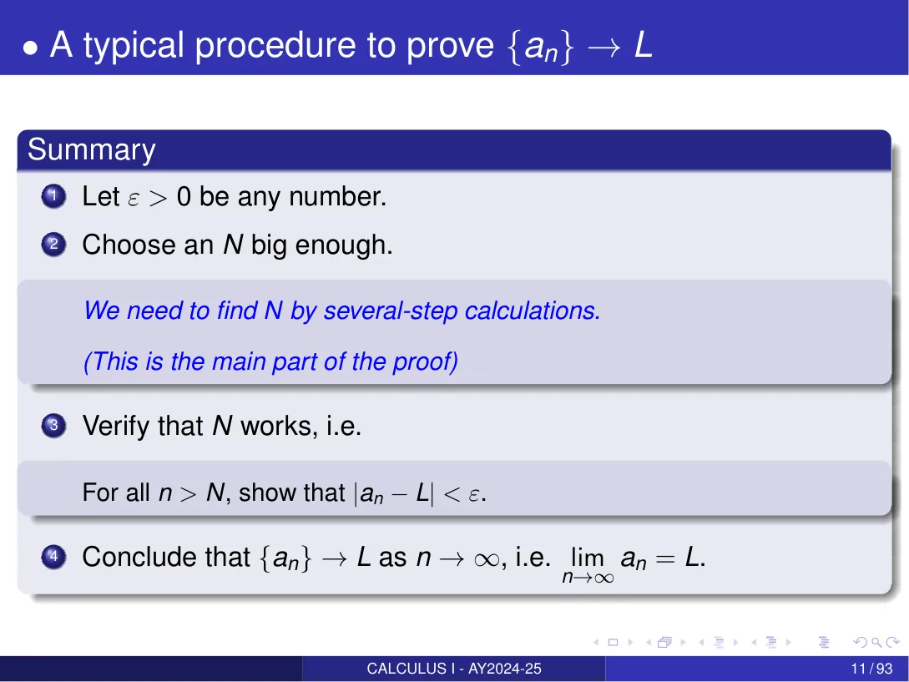
Four steps. (1) Let $\varepsilon>0$ be any number. (2) Choose $N$ big enough: this is the main part, found by working backwards from $|a_n-L|<\varepsilon$ to a condition $n>\dots$. (3) Verify that this $N$ works: for all $n>N$ show $|a_n-L|<\varepsilon$. (4) Conclude $\lim a_n=L$. Scratch work (step 2) is not part of the final proof: the written proof starts with the chosen $N$.
Bốn bước. (1) Cho $\varepsilon>0$ bất kỳ. (2) Chọn $N$ đủ lớn: đây là phần chính, tìm bằng cách đi ngược từ $|a_n-L|<\varepsilon$ đến điều kiện $n>\dots$. (3) Kiểm tra $N$ này dùng được: với mọi $n>N$ chứng tỏ $|a_n-L|<\varepsilon$. (4) Kết luận $\lim a_n=L$. Nháp (bước 2) không thuộc bài chứng minh cuối: bài viết bắt đầu bằng $N$ đã chọn.
Exams ask for exactly this written proof; the steps and the verification of $N$ carry the marks.
Đề thi yêu cầu đúng bài chứng minh viết này; các bước và việc kiểm tra $N$ là phần được điểm.
Prove with the four steps that $\displaystyle\lim_{n\to\infty}\frac{3n+1}{n+2}=3$.
Chứng minh bằng bốn bước rằng $\displaystyle\lim_{n\to\infty}\frac{3n+1}{n+2}=3$.
Answer and solution · Đáp án và lời giải
Answer · Đáp án: $N=\dfrac5\varepsilon$ works
Let $\varepsilon>0$. $\left|\frac{3n+1}{n+2}-3\right|=\left|\frac{3n+1-3n-6}{n+2}\right|=\frac5{n+2}$. This is $<\varepsilon$ when $n+2>\frac5\varepsilon$, which is guaranteed for $n>N:=\frac5\varepsilon$ (then $n+2>n>\frac5\varepsilon$). So for all $n>N$, $|a_n-3|<\frac5{n+2}<\frac5N=\varepsilon$. Hence the limit is $3$.
Cho $\varepsilon>0$. $\left|\frac{3n+1}{n+2}-3\right|=\left|\frac{3n+1-3n-6}{n+2}\right|=\frac5{n+2}$. Giá trị này $<\varepsilon$ khi $n+2>\frac5\varepsilon$, điều được đảm bảo với $n>N:=\frac5\varepsilon$ (khi đó $n+2>n>\frac5\varepsilon$). Vậy với mọi $n>N$, $|a_n-3|<\frac5{n+2}<\frac5N=\varepsilon$. Do đó giới hạn là $3$.
Uniqueness and the limit laws · Tính duy nhất và các quy tắc giới hạn
★★★ Core · Cốt lõi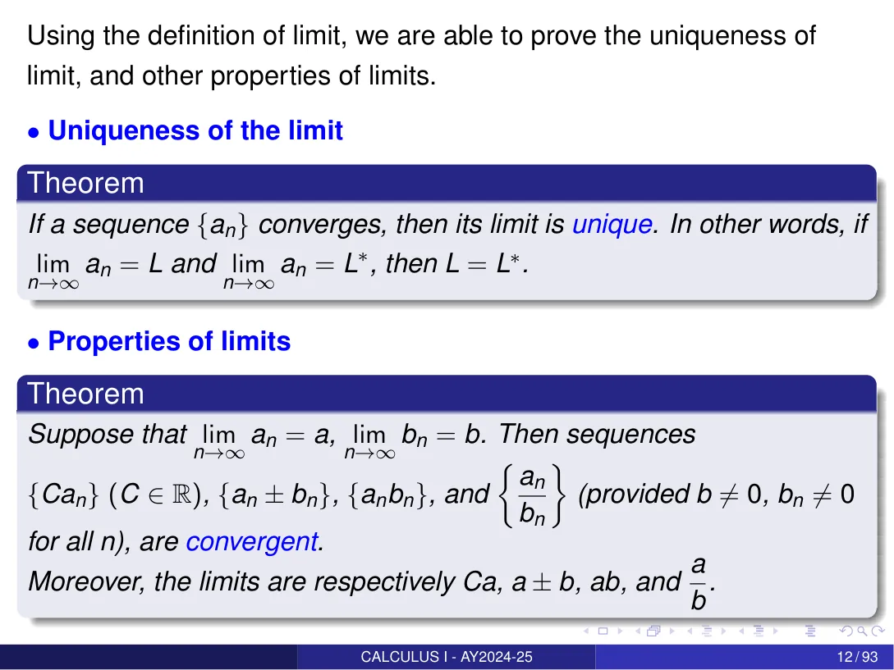
Uniqueness: a convergent sequence has exactly one limit. Limit laws: if $a_n\to a$ and $b_n\to b$ then $Ca_n\to Ca$, $a_n\pm b_n\to a\pm b$, $a_nb_n\to ab$ and $\frac{a_n}{b_n}\to\frac ab$ (if $b\ne0$ and every $b_n\ne0$). They are the same laws as for functions, and they too are proved from the $\varepsilon$–$N$ definition.
Tính duy nhất: dãy hội tụ có đúng một giới hạn. Quy tắc giới hạn: nếu $a_n\to a$ và $b_n\to b$ thì $Ca_n\to Ca$, $a_n\pm b_n\to a\pm b$, $a_nb_n\to ab$ và $\frac{a_n}{b_n}\to\frac ab$ (nếu $b\ne0$ và mọi $b_n\ne0$). Đó là các quy tắc giống như với hàm số, và cũng được chứng minh từ định nghĩa $\varepsilon$–$N$.
Evaluate $\displaystyle\lim_{n\to\infty}\frac{2n^2+3}{5n^2-n}$ with the limit laws, stating which law is used.
Tính $\displaystyle\lim_{n\to\infty}\frac{2n^2+3}{5n^2-n}$ bằng các quy tắc giới hạn, nêu rõ quy tắc nào được dùng.
Answer and solution · Đáp án và lời giải
Answer · Đáp án: $\dfrac25$
Divide by $n^2$: $\frac{2+3/n^2}{5-1/n}$. Since $\frac1n\to0$ and $\frac1{n^2}=\left(\frac1n\right)^2\to0$, the sum and quotient laws give $\frac{2+0}{5-0}=\frac25$.
Chia cho $n^2$: $\frac{2+3/n^2}{5-1/n}$. Vì $\frac1n\to0$ và $\frac1{n^2}=\left(\frac1n\right)^2\to0$, quy tắc tổng và thương cho $\frac{2+0}{5-0}=\frac25$.
Examples with the limit laws · Ví dụ dùng quy tắc giới hạn
★★★ Core · Cốt lõi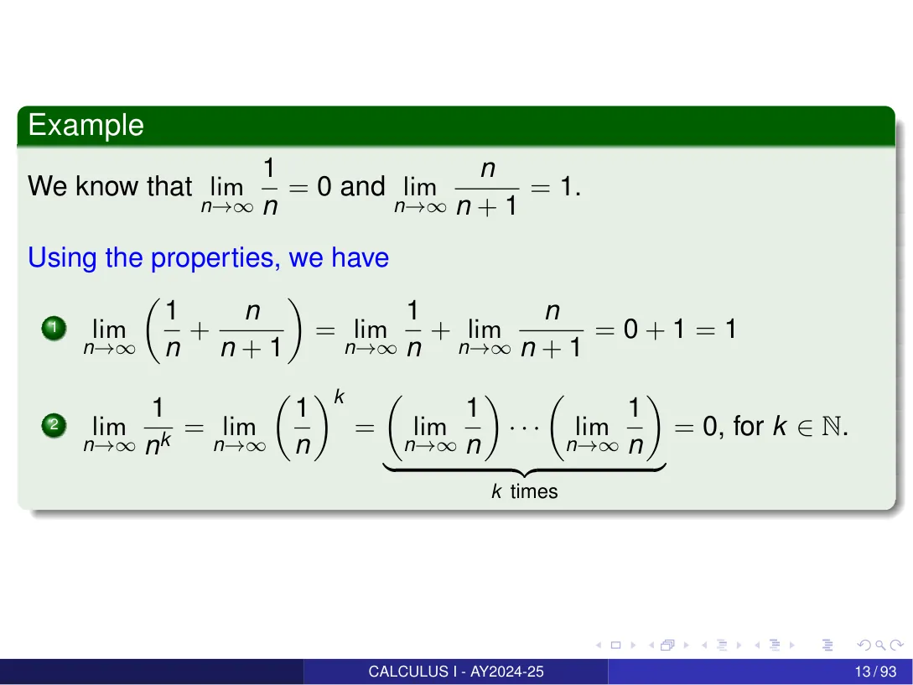
Starting from the known $\lim\frac1n=0$ and $\lim\frac n{n+1}=1$: (1) $\lim\left(\frac1n+\frac n{n+1}\right)=0+1=1$ (sum law); (2) $\lim\frac1{n^k}=\left(\lim\frac1n\right)^k=0$ for $k\in\mathbb N$ (product law applied $k$ times).
Xuất phát từ $\lim\frac1n=0$ và $\lim\frac n{n+1}=1$ đã biết: (1) $\lim\left(\frac1n+\frac n{n+1}\right)=0+1=1$ (quy tắc tổng); (2) $\lim\frac1{n^k}=\left(\lim\frac1n\right)^k=0$ với $k\in\mathbb N$ (quy tắc tích áp dụng $k$ lần).
Evaluate $\displaystyle\lim_{n\to\infty}\left(\frac n{n+1}\right)^3$ and $\displaystyle\lim_{n\to\infty}\left(\frac1n+\frac2{n^2}\right)$.
Tính $\displaystyle\lim_{n\to\infty}\left(\frac n{n+1}\right)^3$ và $\displaystyle\lim_{n\to\infty}\left(\frac1n+\frac2{n^2}\right)$.
Answer and solution · Đáp án và lời giải
Answer · Đáp án: $1$ and $0$
Product law: $\left(\frac n{n+1}\right)^3\to1^3=1$. Sum and constant-multiple laws: $\frac1n+2\cdot\frac1{n^2}\to0+2\cdot0=0$.
Quy tắc tích: $\left(\frac n{n+1}\right)^3\to1^3=1$. Quy tắc tổng và hằng số nhân: $\frac1n+2\cdot\frac1{n^2}\to0+2\cdot0=0$.
Interchanging a limit with a continuous function · Hoán đổi giới hạn với hàm liên tục
★★★ Core · Cốt lõi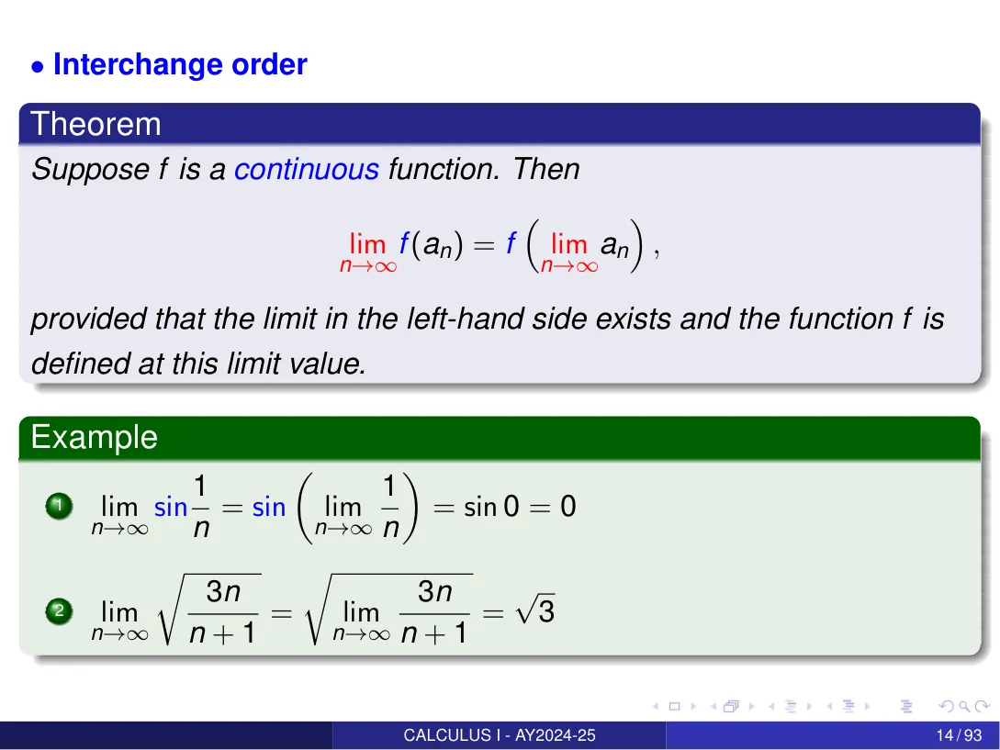
Theorem. If $f$ is continuous and $\lim a_n$ exists and lies in the domain of $f$ then $\lim f(a_n)=f\left(\lim a_n\right)$. Examples: $\lim\sin\frac1n=\sin\left(\lim\frac1n\right)=\sin0=0$; $\lim\sqrt{\frac{3n}{n+1}}=\sqrt{\lim\frac{3n}{n+1}}=\sqrt3$. The condition that $f$ be defined at the limit matters: $\ln\frac1n$ has $\frac1n\to0$ but $\ln0$ does not exist (indeed $\ln\frac1n\to-\infty$).
Định lý. Nếu $f$ liên tục và $\lim a_n$ tồn tại và nằm trong miền xác định của $f$ thì $\lim f(a_n)=f\left(\lim a_n\right)$. Ví dụ: $\lim\sin\frac1n=\sin\left(\lim\frac1n\right)=\sin0=0$; $\lim\sqrt{\frac{3n}{n+1}}=\sqrt{\lim\frac{3n}{n+1}}=\sqrt3$. Điều kiện $f$ xác định tại giới hạn rất quan trọng: $\ln\frac1n$ có $\frac1n\to0$ nhưng $\ln0$ không tồn tại (thực ra $\ln\frac1n\to-\infty$).
Evaluate $\displaystyle\lim_{n\to\infty}\cos\frac{\pi n}{2n+1}$, $\displaystyle\lim_{n\to\infty}e^{1/n}$ and $\displaystyle\lim_{n\to\infty}\ln\frac n{n+1}$.
Tính $\displaystyle\lim_{n\to\infty}\cos\frac{\pi n}{2n+1}$, $\displaystyle\lim_{n\to\infty}e^{1/n}$ và $\displaystyle\lim_{n\to\infty}\ln\frac n{n+1}$.
Answer and solution · Đáp án và lời giải
Answer · Đáp án: $0$, $1$ and $0$
$\frac{\pi n}{2n+1}\to\frac\pi2$ and $\cos$ is continuous: $\cos\frac\pi2=0$. $\frac1n\to0$ so $e^{1/n}\to e^0=1$. $\frac n{n+1}\to1>0$ (in the domain of $\ln$) so $\ln\frac n{n+1}\to\ln1=0$.
$\frac{\pi n}{2n+1}\to\frac\pi2$ và $\cos$ liên tục: $\cos\frac\pi2=0$. $\frac1n\to0$ nên $e^{1/n}\to e^0=1$. $\frac n{n+1}\to1>0$ (thuộc miền xác định của $\ln$) nên $\ln\frac n{n+1}\to\ln1=0$.
Divergent sequences and subsequences · Dãy phân kỳ và dãy con
★★★ Core · Cốt lõi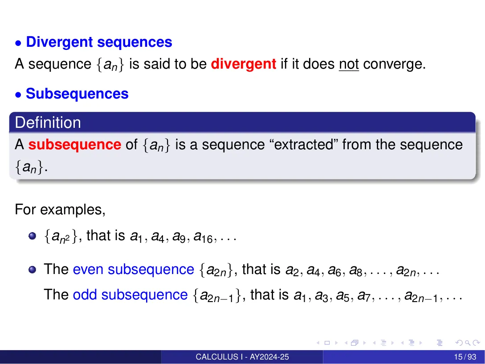
A sequence is divergent if it does not converge. A subsequence of $\{a_n\}$ is a sequence extracted from it by keeping some terms in order: $\{a_{n^2}\}=a_1,a_4,a_9,a_{16},\dots$; the even subsequence $\{a_{2n}\}=a_2,a_4,a_6,\dots$; the odd subsequence $\{a_{2n-1}\}=a_1,a_3,a_5,\dots$.
Một dãy phân kỳ nếu nó không hội tụ. Dãy con của $\{a_n\}$ là dãy trích ra từ nó bằng cách giữ lại một số số hạng theo thứ tự: $\{a_{n^2}\}=a_1,a_4,a_9,a_{16},\dots$; dãy con chẵn $\{a_{2n}\}=a_2,a_4,a_6,\dots$; dãy con lẻ $\{a_{2n-1}\}=a_1,a_3,a_5,\dots$.
For $a_n=\sin\frac{n\pi}2$ write the subsequences $a_{4n}$ and $a_{4n+1}$ and their limits.
Với $a_n=\sin\frac{n\pi}2$ viết các dãy con $a_{4n}$ và $a_{4n+1}$ và giới hạn của chúng.
Answer and solution · Đáp án và lời giải
Answer · Đáp án: $a_{4n}=0$ and $a_{4n+1}=1$ for every $n$
$a_{4n}=\sin(2n\pi)=0$ and $a_{4n+1}=\sin\left(2n\pi+\frac\pi2\right)=1$: two constant subsequences with limits $0$ and $1$. By the next slide this proves that $\{a_n\}$ diverges.
$a_{4n}=\sin(2n\pi)=0$ và $a_{4n+1}=\sin\left(2n\pi+\frac\pi2\right)=1$: hai dãy con hằng với giới hạn $0$ và $1$. Theo slide sau, điều này chứng minh $\{a_n\}$ phân kỳ.
Subsequence theorem and how to prove divergence · Định lý dãy con và cách chứng minh phân kỳ
★★★ Core · Cốt lõi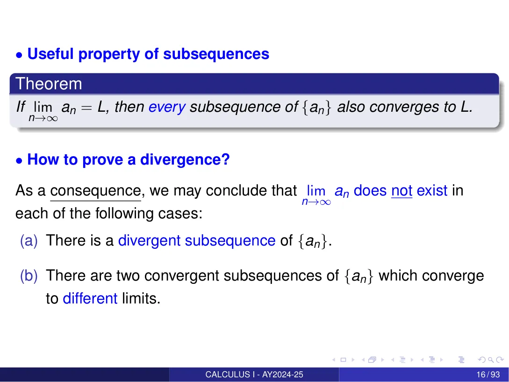
Theorem. If $\lim a_n=L$ then every subsequence of $\{a_n\}$ also converges to $L$. Consequence, two ways to prove divergence: (a) $\{a_n\}$ has a divergent subsequence; (b) $\{a_n\}$ has two convergent subsequences with different limits. Warning: the converse of the theorem is false for a single subsequence: one convergent subsequence does not make the whole sequence converge.
Định lý. Nếu $\lim a_n=L$ thì mọi dãy con của $\{a_n\}$ cũng hội tụ về $L$. Hệ quả, hai cách chứng minh phân kỳ: (a) $\{a_n\}$ có một dãy con phân kỳ; (b) $\{a_n\}$ có hai dãy con hội tụ với giới hạn khác nhau. Cảnh báo: mệnh đề đảo sai với một dãy con đơn lẻ: một dãy con hội tụ chưa làm cả dãy hội tụ.
This is the standard tool for proving that a sequence diverges; it is a frequent short-answer question.
Đây là công cụ chuẩn để chứng minh một dãy phân kỳ; là câu trả lời ngắn thường gặp.
Show that $a_n=(-1)^n\dfrac n{n+1}$ diverges.
Chứng tỏ $a_n=(-1)^n\dfrac n{n+1}$ phân kỳ.
Answer and solution · Đáp án và lời giải
Answer · Đáp án: even subsequence $\to1$, odd subsequence $\to-1$
$a_{2n}=\frac{2n}{2n+1}\to1$ and $a_{2n-1}=-\frac{2n-1}{2n}\to-1$. Two subsequences with different limits, so $\{a_n\}$ diverges (case (b)), even though $|a_n|\to1$.
$a_{2n}=\frac{2n}{2n+1}\to1$ và $a_{2n-1}=-\frac{2n-1}{2n}\to-1$. Hai dãy con có giới hạn khác nhau, nên $\{a_n\}$ phân kỳ (trường hợp (b)), dù $|a_n|\to1$.
Examples of divergence by subsequences · Ví dụ phân kỳ bằng dãy con
★★★ Core · Cốt lõi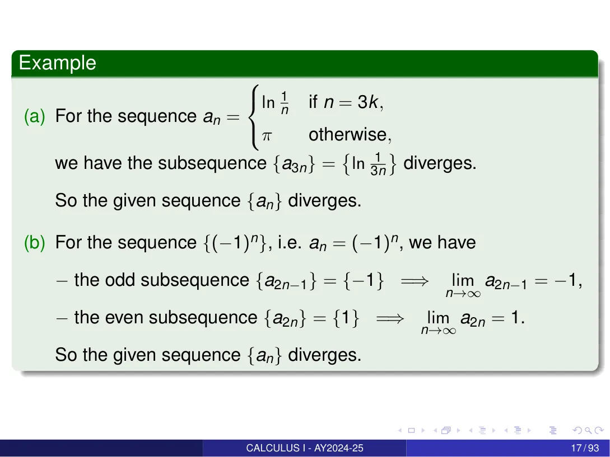
(a) $a_n=\ln\frac1n$ if $n=3^k$ and $a_n=\pi$ otherwise. The subsequence $\{a_{3^n}\}=\left\{\ln\frac1{3^n}\right\}=\{-n\ln3\}$ diverges (to $-\infty$), so $\{a_n\}$ diverges, case (a). (b) $a_n=(-1)^n$: the odd subsequence $a_{2n-1}=-1$ has limit $-1$ and the even subsequence $a_{2n}=1$ has limit $1$; different limits, so $\{a_n\}$ diverges, case (b).
(a) $a_n=\ln\frac1n$ nếu $n=3^k$ và $a_n=\pi$ trong trường hợp còn lại. Dãy con $\{a_{3^n}\}=\left\{\ln\frac1{3^n}\right\}=\{-n\ln3\}$ phân kỳ (về $-\infty$), nên $\{a_n\}$ phân kỳ, trường hợp (a). (b) $a_n=(-1)^n$: dãy con lẻ $a_{2n-1}=-1$ có giới hạn $-1$ và dãy con chẵn $a_{2n}=1$ có giới hạn $1$; hai giới hạn khác nhau nên $\{a_n\}$ phân kỳ, trường hợp (b).
Show that $a_n=n$ for even $n$ and $a_n=\frac1n$ for odd $n$ diverges, and that $\frac{(-1)^n}n$ converges.
Chứng tỏ $a_n=n$ với $n$ chẵn và $a_n=\frac1n$ với $n$ lẻ phân kỳ, và $\frac{(-1)^n}n$ hội tụ.
Answer and solution · Đáp án và lời giải
Answer · Đáp án: the first diverges; the second converges to $0$
The even subsequence $a_{2n}=2n\to\infty$ is divergent, so $\{a_n\}$ diverges (case (a)), although the odd subsequence $\frac1{2n-1}\to0$. For $\frac{(-1)^n}n$: $\left|\frac{(-1)^n}n-0\right|=\frac1n<\varepsilon$ for $n>\frac1\varepsilon$, so it converges to $0$ even though it alternates in sign.
Dãy con chẵn $a_{2n}=2n\to\infty$ phân kỳ, nên $\{a_n\}$ phân kỳ (trường hợp (a)), dù dãy con lẻ $\frac1{2n-1}\to0$. Với $\frac{(-1)^n}n$: $\left|\frac{(-1)^n}n-0\right|=\frac1n<\varepsilon$ khi $n>\frac1\varepsilon$, nên nó hội tụ về $0$ dù đổi dấu.